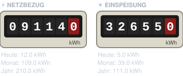

Photovoltaik, Wärmepumpe, Pelletofen, Kameras und Alexa – alles in einer Oberfläche, lokal gesteuert und automatisiert.
85
Integrationen
400+
Entitäten
10
Automationen
15
Kameras
Energie im Blick.
Jede Kilowattstunde wird gemessen: was die Sonne liefert, was das Haus verbraucht und was ins Netz geht.
☀️
Photovoltaik
SolaX-Wechselrichter über die Cloud-API, dazu zwei Balkonkraftwerke von APsystems.
Live-Leistung und Hausverbrauch
Amortisation in Prozent
⚡
Stromzähler
Ein Tasmota-Lesekopf am Zähler liefert Netzbezug und Einspeisung.
Verbrauchszähler für Tag, Monat, Jahr
Ersparnis gegenüber früher
🌡️
Wärmepumpe
Luft-Wasser-Wärmepumpe (R290) über Tuya – Strom- und Wärmemengen-Zähler direkt aus dem Gerät.
Strom und Wärme pro Tag, Monat, Jahr
Einschaltzeit und Solarstrom-Anteil
Ersparnis gegenüber der alten Gasheizung
💶
Kosten & Amortisation
Strompreis, Einspeisevergütung und Anschaffungskosten als Helfer – daraus rechnet Home Assistant die Ersparnis.
PV und Wärmepumpe getrennt
Restbetrag und voraussichtliches „bezahlt am“
🔥
Pelletofen
Oranier-Ofen mit smartCon-Modul: Raumtemperatur, Abgastemperatur, Status und Solltemperatur per Schieber.
Start/Stopp nur mit Bestätigung
Sollwert begrenzt auf 19–26 °C

Stromzähler im DashboardNetzbezug und Einspeisung als Rollenzählwerk, gezeichnet aus den Werten des Tasmota-Lesekopfs.Wärmepumpe im DashboardDer Ventilator dreht sich, solange der Kompressor läuft. Dazu Arbeitszahl, Temperaturen und beide Zähler.
Momentaufnahme aus dem Home-Assistant-Dashboard. Die Karten sind Markdown-Karten, die per Template ein SVG zeichnen.
Sicher. Rund um die Uhr.
Rauch, Wasser, Bewegung – das Haus meldet sich, bevor etwas passiert.
🚨
Rauchmelder
Fünf vernetzte Melder. Bei Alarm: Push aufs Handy und Durchsage auf allen Echos – auch nachts.
💧
Wassersensor
Im Keller. Push-Nachricht sofort, Sprachansage nur tagsüber.
🔐
Alarmanlage
Blink und UniFi Alarm-Manager schalten sich automatisch scharf, wenn niemand zuhause ist – und unscharf bei der Heimkehr.
📷
Kameras
UniFi Protect, Reolink, Blink und eufy – mit Bewegungserkennung und Türklingel.
Kleine Dinge. Großer Komfort.
Automationen, die man nicht bemerkt – bis man sie vermisst.
🗑️
Müllabfuhr
Abfuhrkalender als Template-Sensor. Erinnerung am Vorabend und Durchsage am Morgen.
🔋
Batterien
Ein Sensor sammelt alle Geräte mit schwacher Batterie – auch Tinte im Drucker.
📢
Alexa-Durchsagen
Ein Skript für Durchsagen im ganzen Haus, nur im Erdgeschoss oder nur oben.
📺
Dashboard auf dem TV
Jede Dashboard-Ansicht lässt sich per Google Cast auf den Fernseher schicken.
🖨️
Scans
Der Drucker scannt direkt auf das NAS – Home Assistant meldet jede neue Datei.
💾
NAS-Überwachung
Festplatten, Volume, Füllstand und Temperatur – Warnung nur, wenn wirklich etwas ist.
Die Automationen.
Zum Nachbauen. Einfach aufklappen, kopieren und die Entity-IDs an das eigene System anpassen.
Alle Beispiele sind anonymisiert: Namen, Geräte-IDs, Adressen und Seriennummern wurden durch Platzhalter wie notify.smartphone oder person.bewohner_1 ersetzt.
Unter der Haube.
Home Assistant OS auf eigener Hardware, ergänzt um ein NAS für Medien und Daten.
Plattform
Home Assistant OSSynology NASMQTT (Mosquitto)VPN-Fernzugriff2FA
Energie
SolaX CloudAPsystems EZ1TasmotaXtend TuyaUtility Meter
Sicherheit
UniFi ProtectUniFi NetworkReolinkBlinkeufy
Haus & Medien
Alexa DevicesPhilips HueMerossSonoffGree KlimaGoogle CastAndroid TVSamsung TV
Gebaut zu zweit.
Diese Seite ist an einem Nachmittag entstanden, im Gespräch zwischen mir und Claude, einer KI von Anthropic. Ich hatte die Ideen und das Haus, Claude hat gelesen, geschrieben und geprüft.
Ich
Idee, Haus, Entscheidungen
Wünsche zum Stil: dunkel, ruhig, wie bei Apple oder Tesla
Entschieden, was gezeigt wird und was privat bleibt
Konten angelegt und Freigaben erteilt
Getestet, zurückgemeldet, nachgeschärft
Claude
Lesen, schreiben, prüfen
Konfiguration direkt aus Home Assistant gelesen
Automationen in nachbaubare Beispiele übersetzt
Seite gestaltet, programmiert und hochgeladen
Jede Version auf private Daten durchsucht
1
Erst WordPress, dann ein besserer Weg
Geplant war eine Seite auf dem eigenen NAS. Claude schlug GitHub Pages vor: kein Server, der offen im Internet steht, keine Updates, HTTPS inklusive.
2
Konfiguration auslesen
Über eine Schnittstelle zu Home Assistant hat Claude Automationen, Skripte und Helfer gelesen, ohne dass ich etwas exportieren musste.
3
Anonymisieren, und zwar gründlich
Namen, IP-Adressen, Seriennummern, E-Mail-Adressen, Geräte-IDs und der echte Müllkalender wurden ersetzt. Ein Prüfskript hat jede Datei mehrfach durchsucht, zum Schluss auch die fertige Live-Seite.
4
Vorschau, Feedback, Feinschliff
Ich habe die Seite vorab privat angesehen. Danach kamen Wärmepumpe, Pelletofen, Kosten und die beiden Dashboard-Karten dazu.
5
Live schalten
Der erste Versuch brach bei GitHub mit einer Zeitüberschreitung ab. Claude hat den Fehler eingegrenzt und die Veröffentlichung neu angestoßen.
6
Statistik und Feedback
Zum Schluss kamen eine Besucherstatistik ohne Cookies und dieser Kommentarbereich dazu.
Die Ideen und Entscheidungen kamen von mir, die Fleißarbeit und das Prüfen von Claude. So macht Basteln Spaß.Mein Fazit nach einem Nachmittag
Hinweise & Fragen.
Eine Idee, ein Fehler in einem Beispiel oder eine Frage zum Nachbauen? Schreib es hier hinein. Zum Kommentieren brauchst du ein GitHub-Konto.